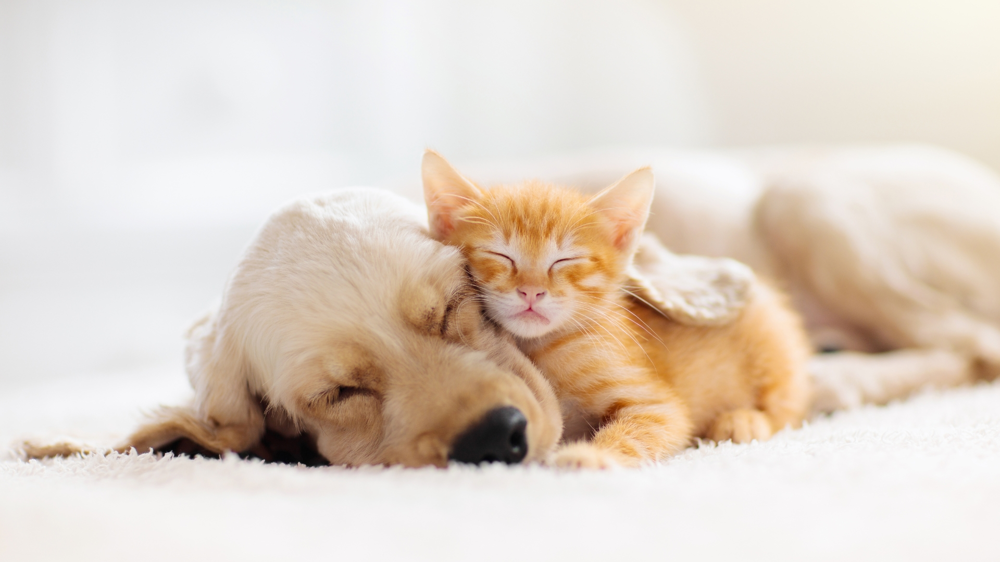

Context
Tinder and other dating apps implement swiping funtionality that allows users to select matches or non-matches based only on a right or left swipe respectively.
Here, we use a limited interface to partially mimic this functionality for users. Except now, instead of selecting romantic matches, we assume the user is a "dog person", and accordingly, that users prefer dogs over cats. As such, users will only swipe right on dogs, and only swipe left on cats.
Go Fetch!
Results
Cats:
0Dogs:
0Dog Ratio:
0%Cat Ratio:
0%Number of Cats:
Pictured in YellowNumber of Dogs:
Pictured in PinkAbout
The purpose of this prototype is to investigate variable rate reinforcement in users.
Variable rate reinforcement is a psychological strategy implemented by dating apps to maintain and maximize user engagement on their apps. Assuming that a match is a "reward" for users, rewards are spaced infrequently and on an unpredictable schedule, called a "partial schedule." This partial schedule reinforces users to stay on the app while waiting to try and get their next reward. It is very resistant to user disengagement because of the lack of predictability in the next reward.
Visible in the results section, the ratio of cats to dogs is highly scewed towards cats, demonstrating that even though users are seeking to "match" with dogs, they engage with far more cats. However, despite this unfavorable ratio, users continue to stay engaged on the app due to the intense appeal of eventually finding another reward.